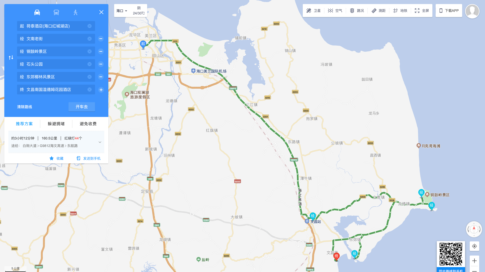
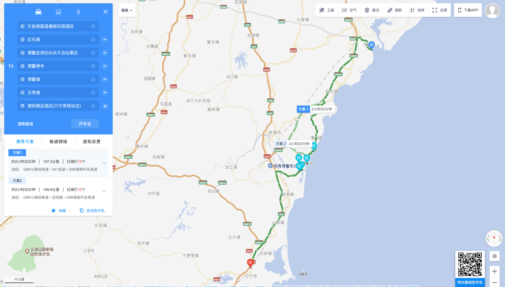
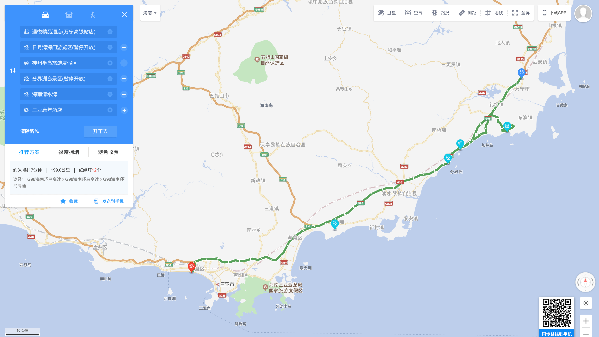
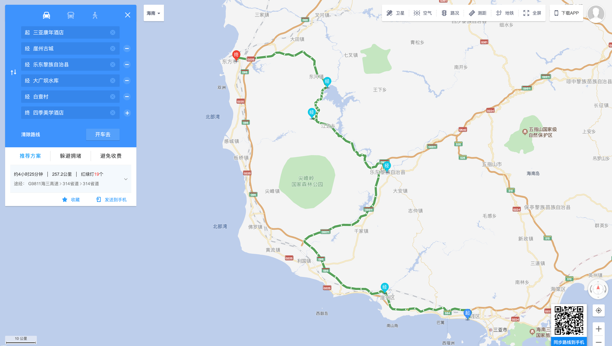
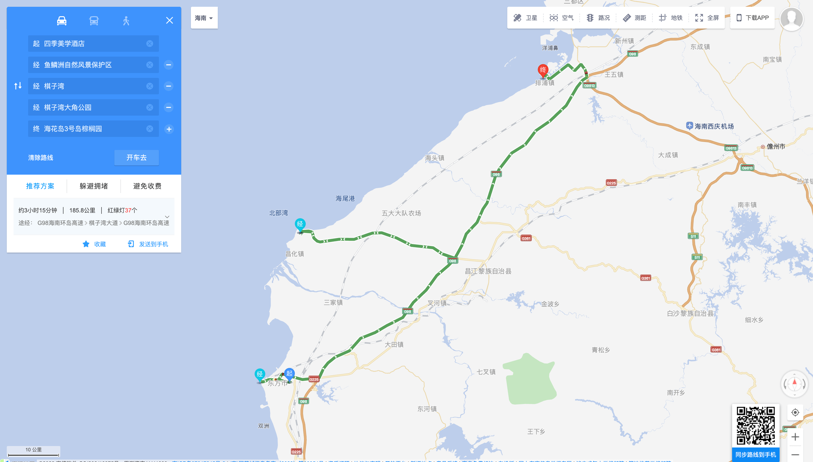
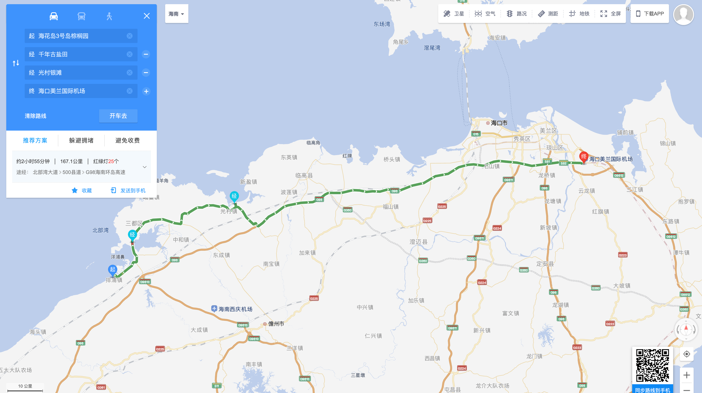
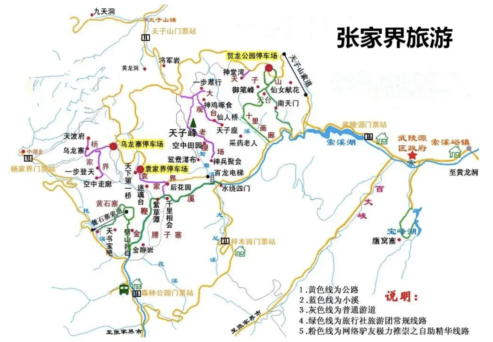

张家界-长沙-海南环岛 10 日游攻略
后记：2022 年 10 月 10 日，我们落地回到了上海。在这过去的 5 天时间里，我们在张家界的酒店静态隔离 3 天，长沙游玩了 2 天，后因担心疫情生变，便选择提前返程。事实告诉我们，疫情年代的出游一定要赶在人群之前，在事情还没有变得更糟之前。张家界政府为了“补偿”被滞留游客，颁布了红头文件说可以为大家免去下次来武陵源景区的门票，但下次却不一定是何时了。
准备趁着十一国庆和婚假出去好好玩一下，由于疫情影响，加之筹备的时间不多，因此之前想要出国以及去澳门的计划只能暂且搁置。但即便国内，可能任意游玩的地方也需要耐心寻找，避开潜在的疫情隔离风险。经过初步筛查，我们选择了张家界和海南环岛这两个地方，中间途径长沙，正好可以去喝一杯茶颜悦色（乐。整个行程我们会从国庆假期的后半段开始，以避开出行高峰。两个人的总预算在 ￥15000 左右。
行李规划
- 容器：行李箱两个、背包两个；
- 衣物：张家界最低温度 12 度，需要准备外套；海南温度比较稳定，短袖和薄外套即可；
- 鞋：至少一双运动鞋、一双拖鞋（下海用）；
- 药物：防蚊虫喷剂、止泻、治头痛药；
- 电子设备：工作电脑、手机电脑充电器、充电宝、拍立得、无线耳机；
- 证件：身份证、驾驶证；
- 洗漱：洗面奶、面膜、蓬蓬粉、唇膜、美容仪（美容液）、防晒霜、化妆品、沐浴液、护手霜、浴花、剃须刀、精华；
- 其他：墨镜。
以下是每天的详细行程计划（尽量每日都做核酸）：
行程 Day1 (10/05)
- 路线：
- （15:00）家 - 上海浦东国际机场：打车到浦东机场，提前一小时到机场；
- （16:45）上海浦东国际机场 - 张家界荷花机场：乘坐飞机（MU8520）直达张家界荷花机场；
- （19:20）张家界荷花机场 - 张家界森林公园东门：乘坐大巴或打车直奔森林公园。路程大约 35 公里；
- （20:50）张家界森林公园东门 - 张家界博雅酒店：入住预定好的酒店。
行程 Day2 (10/06)
- 路线：
- 前提：公园门票 x 2；
- （08:30）张家界森林公园东门：集合；
- 十里画廊：乘坐园区小车到十里画廊站，这里可以乘坐小火车上山观光（至少坐一次），然后再次返回十里画廊站；
- 水绕四门：可以短暂打卡；
- 白龙天梯：必玩，垂直高度最大的户外电梯。然后到达白龙天梯上站；
- 迷魂台 - 天下第一桥：拍照、游玩、补充体力；
- 乌龙寨：乘坐紫色大巴达到，可以向南走参考天然长城；
- 三岔路口：乘坐金色大巴到达三岔路口；
- 大观台：可以张家界俯视山峦（石头）；
- 神堂湾 \ 点将台：选择性参观；
- 天子山：参观贺龙公园；
- 天子山索道上站：美食街，乘坐索道下山；
- 张家界森林公园东门：返回住所。
行程 Day3 (10/07)
- （09:30）张家界森林公园东门：集合；
- 水绕四门：地质博物馆；
- 金鞭溪：全长 7.5 公里，可以徒步直到大氧吧广场；
- 公园南门：可以从东南门出，然后坐巴士到南门；
- 黄石寨：可乘坐索道到黄石寨索道上站，然后返回；
- 龙凤庵下站：乘坐索道到达龙凤庵；
- 杨家界索道下站：乘坐索道到达杨家界索道上站；
- 张家界森林公园东门：返回住所。
行程 Day4 (10/08)
- 前提：天门山公园门票 x 2；
- （08:30）张家界森林公园东门：开车出发去天门山公园；
- 索道下站：直接到山顶（索道上站）；
- 西线方向：出索道上站，往前走 10-20 米，然后 90 度左转弯；
- 西线玻璃栈道 \ 鬼谷栈道：西线景点；
- 天门山寺：分界线，向东线进发；
- 南俯天门：可以俯瞰全景，看天门洞；
- 爱情桥：走外线可以路过；
- 玉壶峰：可以翼装跳伞；
- 下山电梯：下山唯一线路；
- 天门洞：抵达山脚；
- 市区吃午饭；
- （14:42）长沙：乘坐火车（Z8021）前往，路程 3.5 小时左右；
- （18:40）到达长沙国金中心异国印象酒店。
- 长沙市区随逛，并休息。
行程 Day5 (10/09)
- 上午长沙市区闲逛；
- （15:35）黄花国际机场：乘坐飞机（AQ1145）前往海口；
- （17:30）美兰国际机场：到达海口，取车（大海、沙滩、敞篷小跑车还是最佳组合）；
- 前往荷泰酒店（海口红城湖店）入住休息。
行程 Day6 (10/10)

- 海口 - 文昌（全程 160 公里）：
- 景点：市区文南老街、铜鼓岭（需提前买票）、石头公园、文昌东郊椰林；
- 美食：文昌鸡、马鲛鱼、糟粕醋火锅。
- 前往文昌南国温德姆花园酒店入住休息。
行程 Day7 (10/11)

- 文昌 - 琼海 - 博鳌 - 万宁（全程 137 公里）：
- 景点：红石滩、博鳌亚洲论坛永久会址景区、博鳌禅寺、博鳌镇、玉带滩；
- 美食：加积鸭、温泉鹅、琼海指甲螺、鸡藤粑仔、后安粉、后安粉。
- 前往遇悦精品酒店（万宁高铁站店）入住休息。
行程 Day8 (10/12)

- 万宁 - 陵水分界洲岛 -（湾坡路）- 蜈支洲岛 - 三亚（全程 199 公里）：
- 景点：日月湾、神州半岛（灯塔）、分界洲岛、清水湾等；
- 美食：陵水酸粉、疍家鱼粥、三点蟹、琵琶蟹等。
- 前往三亚康年酒店入住休息。
行程 Day9 (10/13)

- 三亚 - 大广坝水库 - 东方市（全程 225 公里）：
- 景点：鹿回头、崖州古城、大广坝水库、白查村、东方市；
- 美食：黄流老鸭，三味灯笼虾，椰糯糕。
- 前往四季美学酒店入住休息。
行程 Day10 (10/14)

- 东方市 - 昌江 - 儋州（全程 185 公里）：
- 景点：鱼鳞洲、棋子湾旅游度假区、棋子湾大角、浪漫海角；
- 美食：昌城乳猪、叉河淡水鲳、新港膏蟹、黎族竹筒香饭。
- 前往蔚莱度假别墅入住休息。
行程 Day11 (10/15)

- 儋州 - 海口（167 公里）：
- 景点：海花岛、千年古盐田、光村银滩、鹭鸶天堂、东坡书院；
- 美食：猪肠馍、儋州东坡肘子、洋浦盐焗宴、长坡米栏、光村沙虫。
- （17:00）海口美兰国际机场：乘坐飞机（CZ6765），返回上海。
附录资料
张家界地图：
